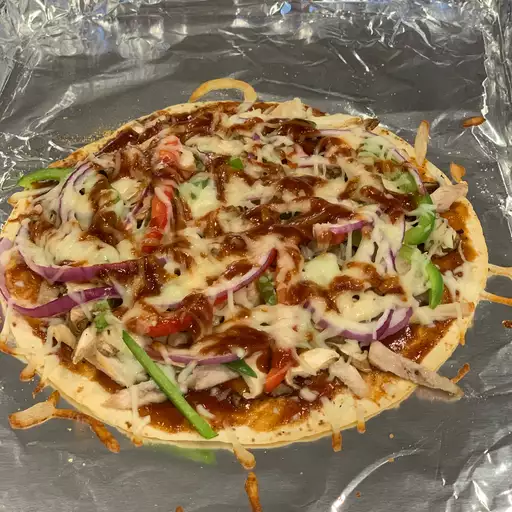

Tortilla Pizza

Description
This tortilla pizza is extremely easy to make.
It is light enough to be a snack, serves well as an appetizer, or is so good that it can be devoured alone!
You can use any sort of topping variation.
Ingridients
- 1 soft flour tortilla
- 1 teaspoon olive oil
- 1 pinch garlic powder
- Salt and ground black pepper to taste
- 3 tablespoons tomato sauce
- 1 cooked chicken breast, sliced
- 1/2 green bell pepper, chopped
- 2 green onions, finely chopped
- 1/3 cup shredded mozzarella cheese/li>
- 1 pinch dried oregano
Steps
- Preheat the oven to 400 degrees F (200 degrees C).
- Place tortilla on a baking sheet.
Brush with olive oil; sprinkle garlic powder, salt, and pepper on top.
- Bake in the preheated oven until golden, 3 to 5 minutes. Remove from the oven
and spread tomato sauce on top; arrange chicken breast, green bell pepper,
and green onions over tomato sauce. Sprinkle with mozzarella cheese.
- Bake in the preheated oven until cheese is melted, about 5 minutes. Sprinkle oregano over cheese. S
lice pizza into wedges using a pizza cutter.